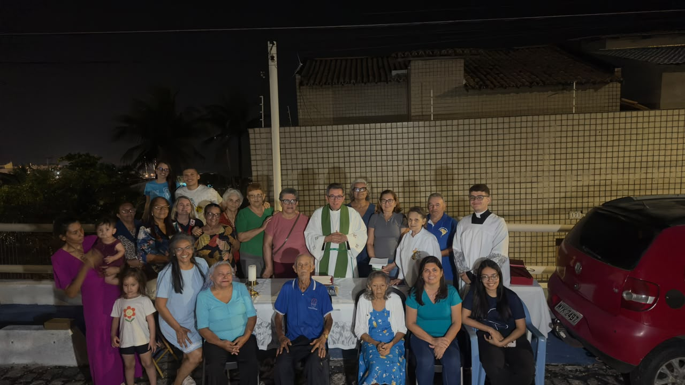
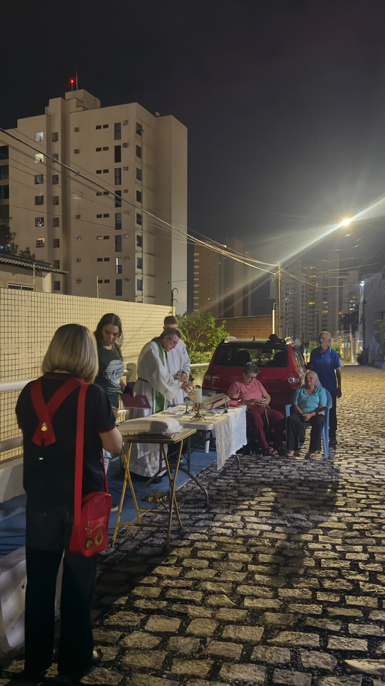
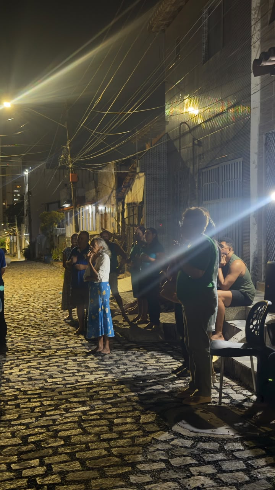
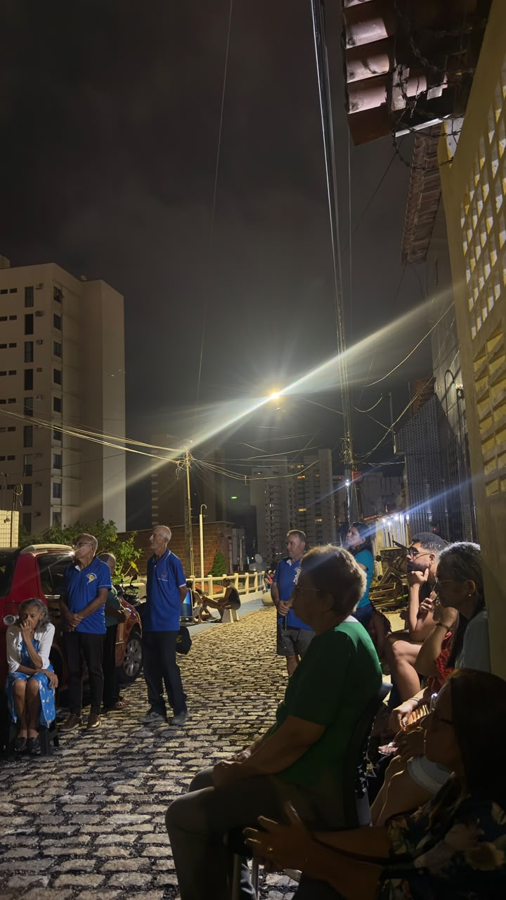
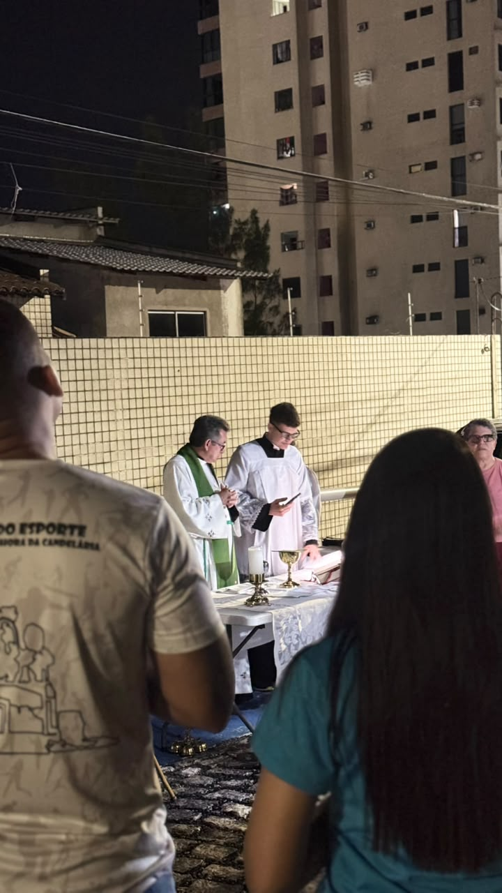
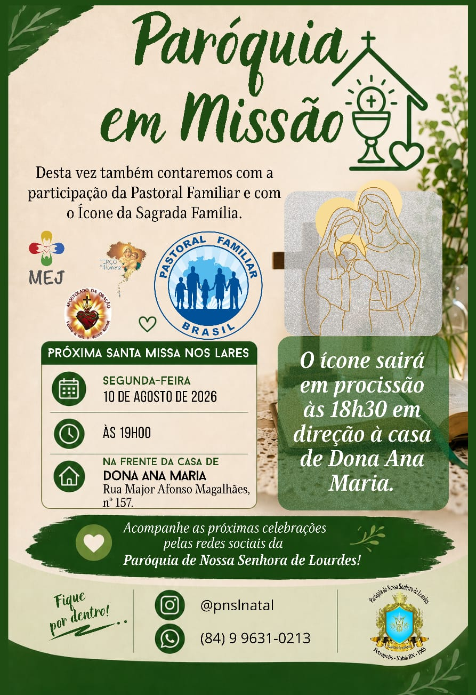

Igreja em saída
Paróquia em Missão
A paróquia vai ao encontro das famílias para celebrar a fé, fortalecer a comunidade e tornar viva a presença de Cristo em nossas ruas.

Memória da missão
Primeira Missa nas Ruas
A iniciativa foi iniciada na Rua Vereador João Soares de Araújo, antiga Rua Oeste, reunindo moradores e agentes pastorais para a celebração da Santa Missa.
“Ide por todo o mundo e proclamai o Evangelho a toda criatura.”





Próxima celebração
Segunda Missa nas Ruas
A próxima Missa nas Ruas será celebrada em frente à casa de Dona Ana Maria. Toda a comunidade está convidada.
Data: segunda-feira, 10 de agosto de 2026.
Horário: 19h.
Local: Rua Major Afonso Magalhães, nº 157 — casa de Dona Ana Maria.
Procissão: saída do ícone da Sagrada Família às 18h30, em direção à casa.
Esta programação ficou identificada no site para ser atualizada facilmente nas próximas missões.